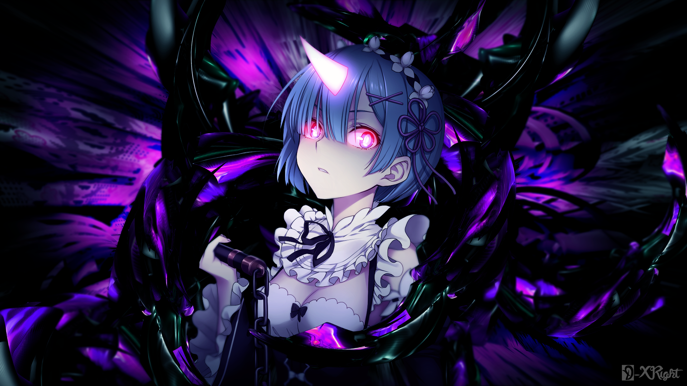

Добрий день!
Мене звати Денис, і я створив цей сайт для того, щоб трохи розповісти про себе. Якщо вам сподобається мій сайт, то ви зможете написати мені свої враження в меню "Contacts", в якому я залишив посилання на свої соцмережі та створив поле, де ви зможете написати свої враження.


Почавши грати в комп'ютерні ігри, я зацікавився тим, як вони працюють, і тоді дізнався про програмування. Мені було цікаво дізнатися, як створюються ігри, сайти, які використовуються в повсякденному житті. І найбільше мені хотілося б створювати власні.

Я дуже активний, тому пробував себе в різних видах спорту. Я ходив на секцію з баскетболу та футболу. Через те що в нас маленьке місто, з початком війни секція з баскетболу припинила своє існування. Тому я віддав більшу перевагу футболу.

Зацікавившись програмуванням, я записувався на різні онлайн-уроки. До цього програмування здавалося мені важким, але я просто взяв неправильний підхід. Коли я натрапив на курс із програмування від університету ХПІ, я створив цей сайт. І тепер моя ціль — вступити до університету та отримати навички, які допоможуть мені створювати різні програми, які використовуватимуть люди в повсякденному житті.

study
У 2014 році я почав навчатися в Берестинському ліцеї №1. У старших класах я брав участь у спортивних змаганнях та різних заходах школи. Я закінчив навчання у 2025 році й планую вступити до вищого навчального закладу.

projects
Це мій перший сайт, який я створив завдяки викладачам з університету ХПІ.